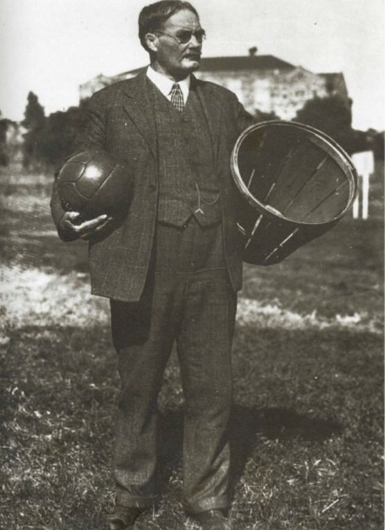

In the late 1800s, a physical education teacher at the International YMCA Training School wanted to design a fun game for his students. Thinking of a way for entertainment, the baskets that would normally hold peaches were used and nailed onto the top balcony of the gymnasium, which was about 10 feet high. Originally, they used soccer balls that students would throw into the peach baskets.
That teacher's name was James Naismith. He wanted the game to be interesting and made it complex enough to understand.
